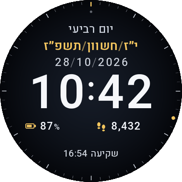

פני שעון עבריים ל-Amazfit, בשתי גרסאות לפי גודל המסך. תאריך עברי עם גימטריה, חגים וספירת העומר, ושעות הדלקת נרות וצאת שבת שמחושבות לפי המיקום והגובה של השעון עצמו.

הורדה לפי דגם קוד המקוריום, חודש ושנה בגימטריה, כולל כלל ט״ו/ט״ז, אדר א׳ ואדר ב׳. אחרי השקיעה התאריך עובר ל"אור ל-…" של היום הבא.
חגים ומועדים לפי מנהג ישראל, צומות שנדחים, ימי הזיכרון והעצמאות, חנוכה עם הנר של הערב וספירת העומר.
הדלקת נרות מיום שישי (או ערב חג) ועד השקיעה, ואז צאת שבת או חג. 20 דקות לפני השקיעה, ו-40 דקות אחריה. בשאר הימים השורה מציגה שקיעה עד השקיעה וזריחה עד הזריחה.
זמני השמש מחושבים לפי המיקום של השעון ולפי הגובה מהברומטר, ולא לפי עיר קבועה.
נקודה זהובה שמסתובבת על טבעת הדקות, בלי ספרות נוספות שמעמיסות על השעה.
שורה אחת מתחת לשעה, בלי עומס. מסך תמיד דלוק מציג שעה, תאריכים וחג בגוון מעומעם.
יש שתי גרסאות, לפי גודל המסך של השעון. בוחרים את זו שהדגם שלכם מופיע בה.
Amazfit GTR 4, Active 3 Premium, Cheetah 2 Pro, T-Rex 3 Pro 44mm, Active 2 Round.
Amazfit Balance, Balance 2, Balance 3, Balance Ultra, T-Rex 3, T-Rex 3 Pro 48mm, T-Rex Ultra 2, Cheetah Pro, Cheetah 2 Ultra, Active Max.
הפנים עוצבו ונבדקו בסימולטור, ובעיקר ל-GTR 4. בשאר הדגמים הן לא נבדקו על שעון אמיתי, והפריסה של גרסת 480 היא אותה פריסה ממורכזת על מסך גדול יותר.
מי שמפתח בטרמינל על הטלפון: bash tools/sync.sh --build בונה ופותח את חלון "פתח באמצעות".
הסדר, מהמועדף:
| מקור | מתי | סימון |
|---|---|---|
| GPS וברומטר של השעון | אם נקלט מיקום ב-6 השעות האחרונות | נקודה זהובה מתחת לשעה 12 |
| נתוני Zepp מהסנכרון | כשאין מיקום עדכני; מתוקן אם נשארה שעת קיץ | נקודה כחולה |
| ירושלים, גובה פני הים | אם אין אף אחד מהם | נקודה אפורה |
החישוב לפי נוסחת NOAA, וההיסט מ-UTC נמדד מול שעון המערכת כדי שהזמנים יעקבו אחרי מעבר בין שעון קיץ לחורף.
אלו זמנים מחושבים ולא פסיקה. בעיר שמנהגה שונה (למשל ירושלים: 40 דקות לפני השקיעה) יש להתאים את הערך, ויש לבדוק מול לוח מוסמך. החישוב מניח אופק פתוח; בגובה 800 מ׳ השקיעה נדחית בכחמש דקות לעומת לוחות פני הים.
research, ללא תצוגה בפנים).tools/zepp_img.py ממיר אליו ומפענח אותו.tools/simulate.cjs) מריץ את הקוד האמיתי מול API מדומה, ומרנדר הדמיות.python3 -I tools/build_v3.py # בונה נכסים, index.js, הדמיות ו-zip (FACE_SIZE=480 למסכי 480) node tools/check_dates.cjs new_face/package/watchface/default-target/index.js 2024 2045 bash tools/sync.sh --build # (בטלפון) פתיחה להתקנה